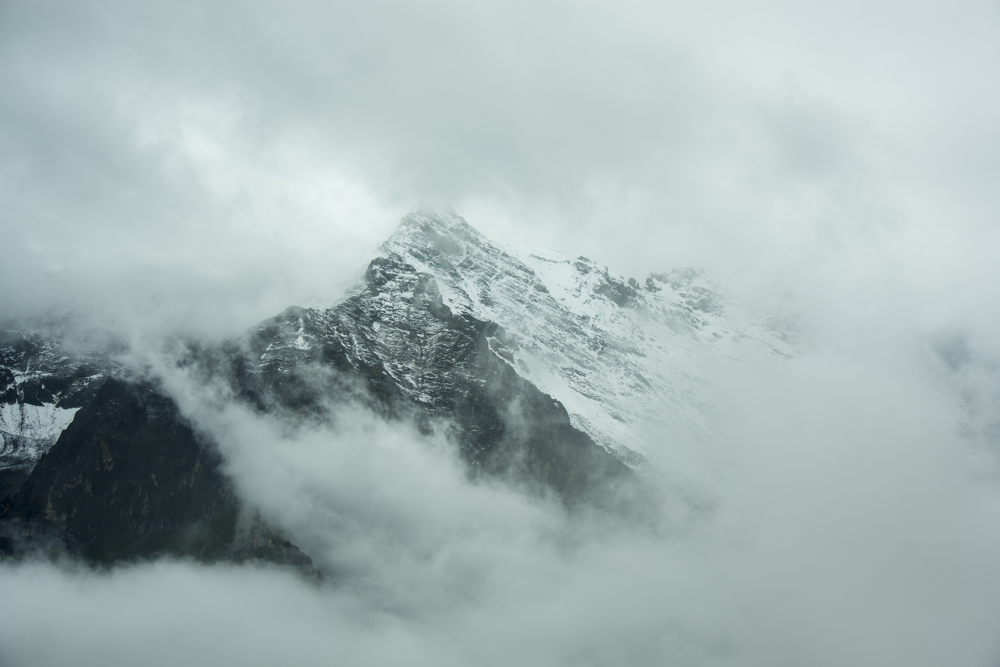
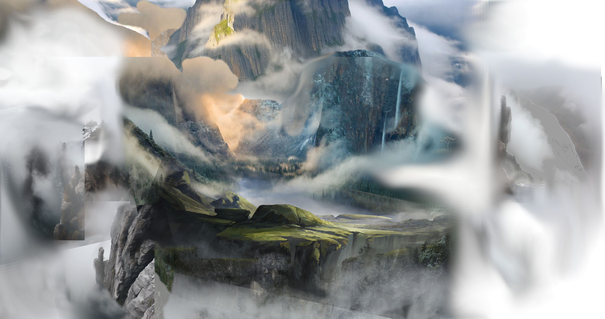
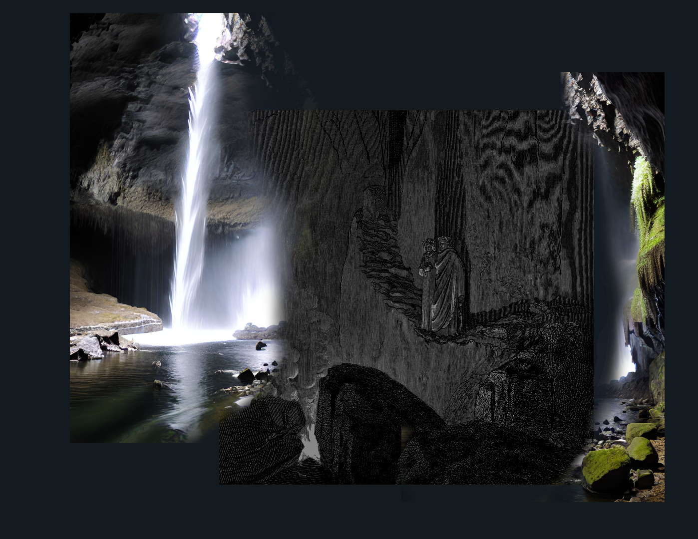
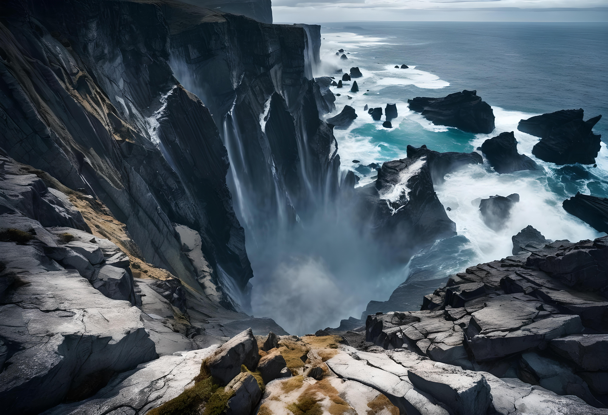
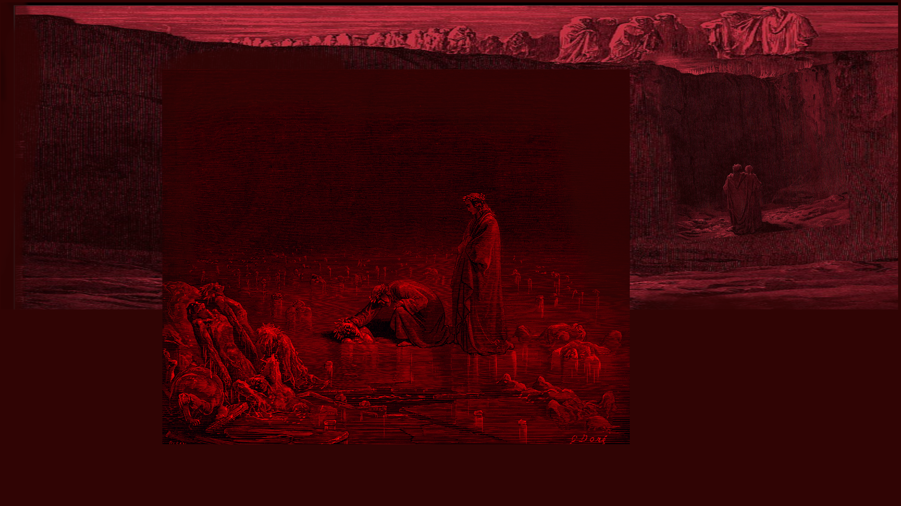

This experimental interface lets you navigate by exploring each scene. Scroll to journey downward and click on highlighted zones within the art to “travel” to new locations. The most mature project is the night sky, HEADSPACE.




